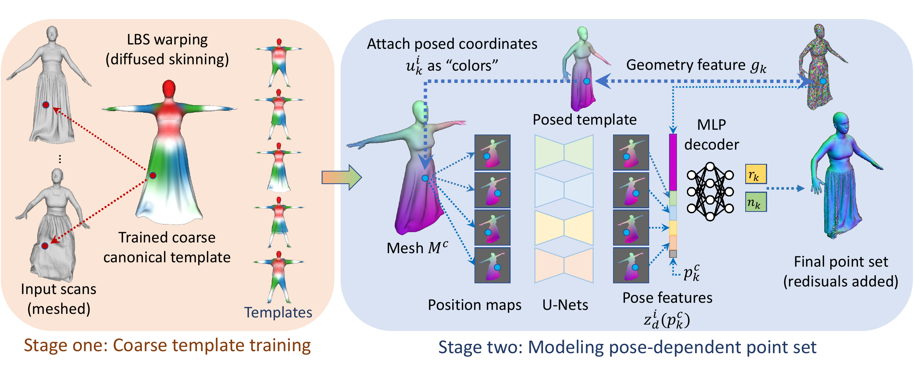

Tsinghua University
We present FITE, a First-Implicit-Then-Explicit framework for modeling human avatars in clothing. Our framework first learns implicit surface templates representing the coarse clothing topology, and then employs the templates to guide the generation of point sets which further capture pose-dependent clothing deformations such as wrinkles. Our pipeline incorporates the merits of both implicit and explicit representations, namely, the ability to handle varying topology and the ability to efficiently capture fine details. We also propose diffused skinning to facilitate template training especially for loose clothing, and projection-based pose-encoding to extract pose information from mesh templates without predefined UV map or connectivity.

Fig 1. Overall pipeline of our first-implicit-then-explicit framework. Left: In stage one we learn implicit templates of different outfits with diffused skinning. Right: In stage two we predict pose-dependent offset from features extracted by projection-based encoders.
Fig 2. Diffused skinning visualized. Each component of the skinning weights on SMPL [1] is
diffused independently and re-normalized to form a skinning field.
Fig 3. Qualitative comparison of our method and POP [2] for novel poses. Our method
produces denser and more continuous point clouds than POP [2].
[1] Loper, M., Mahmood, N., Romero, J., Pons-Moll, G., Black, M.J.: SMPL: A skinned multi-person linear model. ACM Transactions on Graphics 34(6), 248 (2015)
[2] Ma, Q., Yang, J., Tang, S., Black, M.J.: The power of points for modeling humans in clothing. In: Proceedings of the IEEE/CVF International Conference on Computer Vision (ICCV) (Oct 2021)
@inproceedings{lin2022fite,
title={Learning Implicit Templates for Point-Based Clothed Human Modeling},
author={Lin, Siyou and Zhang, Hongwen and Zheng, Zerong and Shao, Ruizhi and Liu, Yebin},
booktitle={ECCV},
year={2022}
}